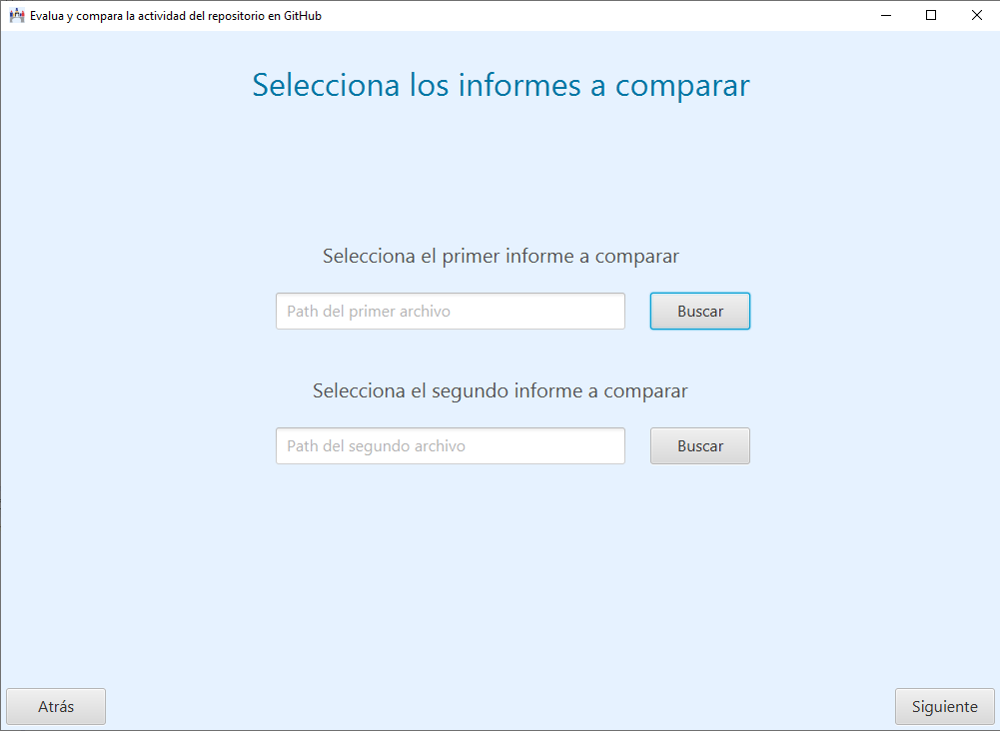

En esta pantalla se introducen las rutas de los dos informes que queremos comparar.
Para introducirlos hay que usar los botones de selección. Si seleccionamos el mismo informe nos mostrará un error. Si la primera línea del informe no tiene guardada la plataforma mostrará un error. Si la plataforma no es la misma mostrará un error.
El botón Siguiente muestra los resultados de la comparación.
También aparece un botón Atrás para volver a la pantalla anterior.
